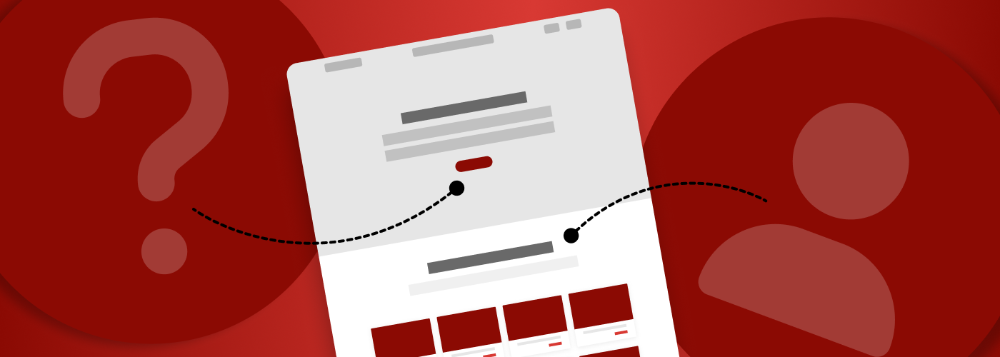

by Ariel Bolles, Content Designer

When a project kicks off, most people agree that user research is a crucial part of the Discovery phase. Through activities such as stakeholder and user interviews and usability testing, teams can better understand the current state of an experience, to identify top tasks of its users, and to glean pain points and opportunities from internal and external audiences. From there a roadmap can be defined, informed by priorities surfaced via the Discovery research.
But what happens after that initial Discovery phase, when you get into the weeds in an area of your site or product and realize you have more questions than answers? Maybe you’re already practicing continuous Discovery, so you’ve built in time for Discovery efforts per feature, but those efforts are limited to more internal-facing tasks such as auditing and reviewing analytics. Perhaps you don’t know why people visit a certain page in the first place, or you suspect users are blocked from a key task because of confusing language or UI. You may want to learn more about how users interact with a particular feature, or test out some hypotheses via design prototypes.
There are helpful research methods that apply across the entire Design and Implementation process and can help bring clarity along the way. But sometimes it’s tough to make the case for more research once a project is underway.
Why user research and testing go dormant
First, it helps to acknowledge and understand why user research efforts sometimes dwindle post-Discovery in the first place. Multiple factors contribute to this happening, including some combination of the following:
- Research is overlooked: Things could seem straightforward when the roadmap is being defined, or the team feels ambitious about Design and Implementation timelines. But it’s common for research to be overlooked (or under-scoped) post-Discovery, and it can be hard to build that time back in once a roadmap is agreed upon.
- Lack of dedicated staff: Often, the same folks who owned Discovery research work pivot into subsequent design activities once that phase is over, and it can be tough to find time for them to multitask on further research once they’re on their way.
- Organizational amnesia: Turnover or a team scaling up or down can contribute to collective memory loss of the how and why of a continuous research practice.
- Immature research ops: Standardized, templatized processes and documentation help to save time (and avoid organizational amnesia), but they require some up-front investment.
- Competing priorities: The timeline is escalated because of an important milestone date, or a piece of legacy infrastructure is being sunsetted so everything needs to migrate off it now — there are often lots of legitimate competing factors!
Seizing the opportunities
At CivicActions, we work in agile, so we’re planning and assessing the work ahead of us each sprint and making adjustments as needed. This iterative, MVP mindset lends itself well to starting small and experimenting, which is a great way to demonstrate the benefits of continuous user research without a large upfront investment.
On one recent project, we’d fallen out of practice of regular usability testing for a combination of the reasons listed above, so we knew it would be an effort to get it going again. Instead, we were able to make the case for implementing custom event tracking in Google Analytics . This relatively low-effort activity gave us a “win” in terms of being able to track how users are interacting with our site, and demonstrated to our client the benefits of gathering some user data, which we think made them more receptive in the long term to other research efforts. Later, when a high-visibility area of the site came up for some improvements, we were able to make the case for investing the time in reinstating usability testing for it, which has led to some really valuable insights that will inform future design work.
Here are some of the practical tactics we used for building our case:
- Be persistent: Speak up about the places in the design process where having more research would help. This could be by highlighting where assumptions become risks, or where it would be helpful to test out hypotheses.
- Take advantage of small windows of time: Unless you have a full-time researcher on your team, it is probably easier to get research moving if you can break it into smaller pieces that can be completed over time, rather than all at once. This means someone might be able to work on a small research-related task while their other work is in review, or if they have a light sprint.
- Make it repeatable: Every research-related asset (such as a testing plan, a script, a survey, or an email draft) can be a template that informs the next one. This increases efficiency and lowers costs over time, and contributes to research ops maturity.
- Build on momentum: If there’s interest in usability testing or other research methods for one feature, then it’s easier to apply that to the next one, too. And if you’ve set up an always-on opt-in pathway for interested users of your product, recruitment will be more efficient as you go.
- Demonstrate the value: People love research insights (really!). Take that research synthesis on the road and share it with everyone connected to and interested in the project — when we can connect the research effort and insights to real-world design decisions, we’re proving the value of that investment. You can even get folks involved earlier on in the process by recruiting teammates and stakeholders to join sessions as observers or note takers.
It takes time and a lot of socialization to make continuous research a given on a project, especially if the practice wasn’t built in from the start. But when we can be flexible, lean, and clearly communicate the positive impact that research can have across a project lifecycle, the concept can become a reality.